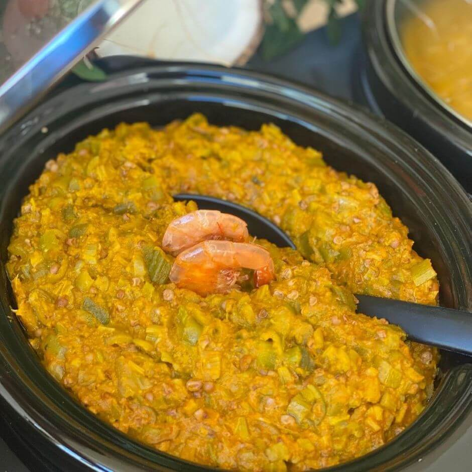

Culinária Indígena
Culinária Indígena
- CA culinária indígena brasileira é rica e diversificada, variando de acordo com as diferentes etnias e
regiões do país. Aqui estão alguns exemplos de pratos e ingredientes comuns na culinária indígena:
1. **Peixes:** Os peixes são uma parte importante da dieta de muitos povos indígenas, especialmente
aqueles que vivem próximos a rios, lagos e oceanos. Eles são preparados de diversas formas, como
assados, cozidos, grelhados ou defumados.
2. **Frutas e vegetais:** Frutas tropicais como açaí, cupuaçu, bacaba, buriti, entre outras, são
consumidas frescas ou usadas na preparação de sucos, sobremesas e outros pratos. Além disso, vegetais
como a mandioca (ou macaxeira), o milho, a batata-doce e o inhame são comuns na dieta indígena.
3. **Farinha de mandioca:** A mandioca é uma planta amplamente cultivada e utilizada na culinária
indígena. A farinha de mandioca é um ingrediente básico em muitas receitas e pode ser consumida de
diversas formas, como farofa, pirão ou beiju.
4. **Caça e coleta:** Além dos peixes, muitos grupos indígenas tradicionalmente caçam animais como
veados, porcos selvagens, aves e pequenos mamíferos. Eles também coletam frutas, raízes, sementes e
insetos como parte de sua dieta.
5. **Pirarucu:** Este é um dos maiores peixes de água doce do mundo e é um importante alimento para
muitas comunidades indígenas da região amazônica. O pirarucu é frequentemente preparado de várias
maneiras, incluindo assado, cozido ou defumado.
6. **Tucupi:** Um caldo amarelo extraído da mandioca brava, o tucupi é amplamente utilizado na culinária
indígena da região amazônica, especialmente no preparo de pratos como o tacacá e o pato no tucupi.
Esses são apenas alguns exemplos da rica diversidade da culinária indígena brasileira. Cada grupo étnico
tem suas próprias tradições alimentares, métodos de preparo e ingredientes específicos, refletindo a
relação única que têm com o ambiente natural ao seu redor.aruru

Trata-se de um prato feito com quiabo, camarão seco, castanha de caju, amendoim, azeite de dendê, entre outros
ingredientes. É tradicionalmente servido com vatapá e acarajé, formando uma trindade gastronômica famosa na
Bahia. A
culinária indígena brasileira é bastante diversificada e inclui pratos como peixes assados, cozidos ou
grelhados,
farinha de mandioca, frutas tropicais, entre outros alimentos típicos das diferentes regiões e etnias indígenas
do
Brasil.